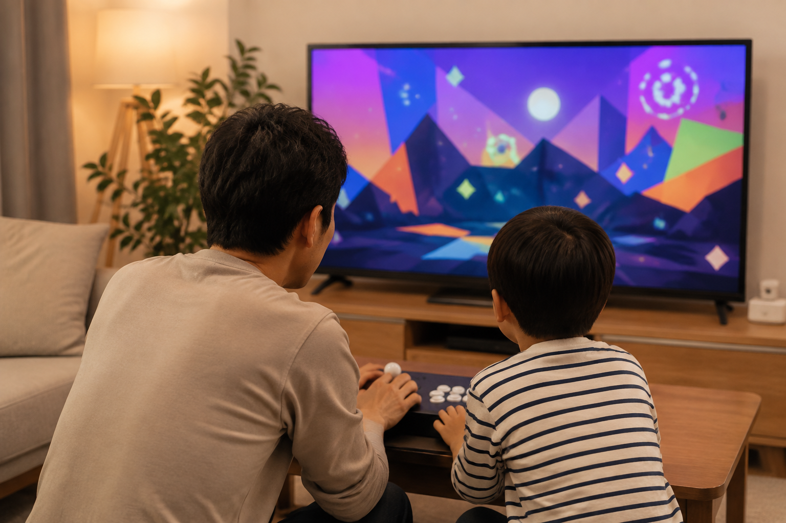
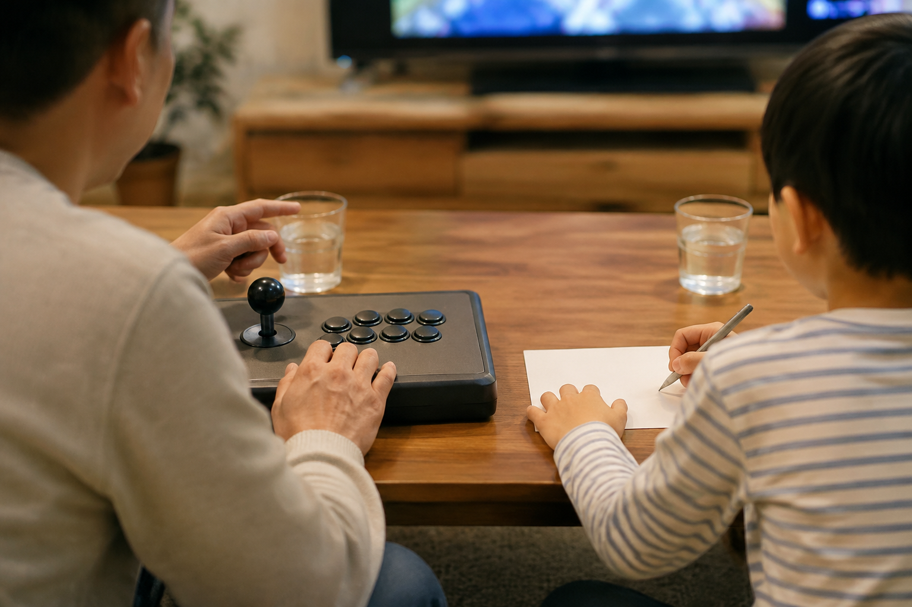

부모와 아이가 오락기를 더 재미있게 즐기려면 누가 잘하는지보다 차례와 역할, 쉬는 시간을 먼저 정하는 편이 좋습니다. 시작 전에는 아이에게 맞는 게임의 표현과 조작 난이도, 원하는 게임의 현재 안내를 보호자가 확인하세요.

처음에는 같은 화면을 함께 보세요
처음부터 점수나 승부를 정하기보다 한 판의 흐름을 같이 보며 어떤 버튼을 쓰는지 이야기해 보세요. 아이가 조작하기 어렵다면 보호자가 화면을 읽고 아이가 버튼을 눌러 보는 식으로 역할을 나눌 수 있습니다. 함께 할 게임을 고르는 기준은 아이와 함께하기 좋은 오락실 게임에서도 확인할 수 있습니다.
부모와 아이가 같은 화면을 함께 보면 게임의 시작이 한결 편해집니다.

차례와 역할을 간단히 정하세요
한 사람이 계속 조작하면 다른 사람은 기다리는 시간이 길어질 수 있으므로, 한 판씩 번갈아 하거나 구간마다 역할을 바꾸는 방법을 정해 보세요. 두 사람이 동시에 즐길 수 있는지 여부는 기기 구성만으로 단정하지 말고 상품과 게임의 현재 안내를 따로 확인해야 합니다. 노리박스는 제품을 준비할 때 직접 게임을 실행하고 조이스틱과 버튼을 만져보며 사용 과정의 불편을 확인한다고 소개합니다.
차례와 역할을 미리 정하면 함께하는 게임 시간이 더 고르게 이어집니다.
아이의 반응에 맞춰 속도를 조절하세요
아이가 어려워하거나 피곤해 보이면 한 번 더 시도하라고 재촉하기보다 멈추거나 다른 방식으로 바꾸는 편이 좋습니다. 게임 속 표현과 난이도는 게임마다 다를 수 있으므로 보호자가 현재 안내를 보고 판단하세요. 함께 쓰는 기기의 자리와 화면 위치도 아이가 편하게 볼 수 있는지 확인하면 좋습니다.
아이의 반응을 살피며 게임 속도를 조절하는 것이 함께 즐기는 시간의 기준입니다.
끝난 뒤에는 다음 약속을 남기세요
게임을 마친 뒤 재미있었던 장면이나 다음에 해 보고 싶은 조작을 짧게 이야기하면 다음 시간의 시작이 쉬워집니다. 두 사람이 이용할 때 필요한 조작 환경은 가정용 오락기의 2인 이용 기준, 설치할 자리의 기준은 우리 집 공간에 맞는 오락기 형태에서 이어서 볼 수 있습니다.
게임 뒤의 짧은 대화는 다음에 함께할 시간을 자연스럽게 만듭니다.
현재 노리박스 오락실게임기와 관련 제품은 제품자세히보기에서 확인하세요.